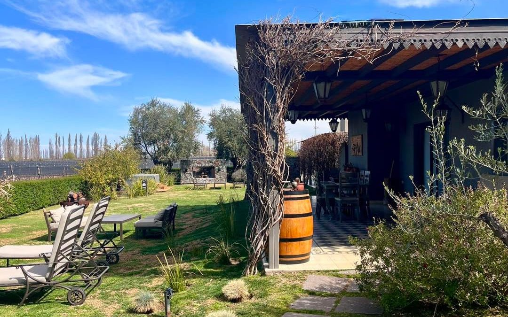
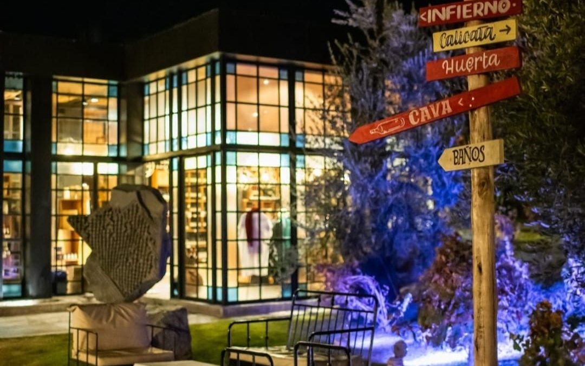
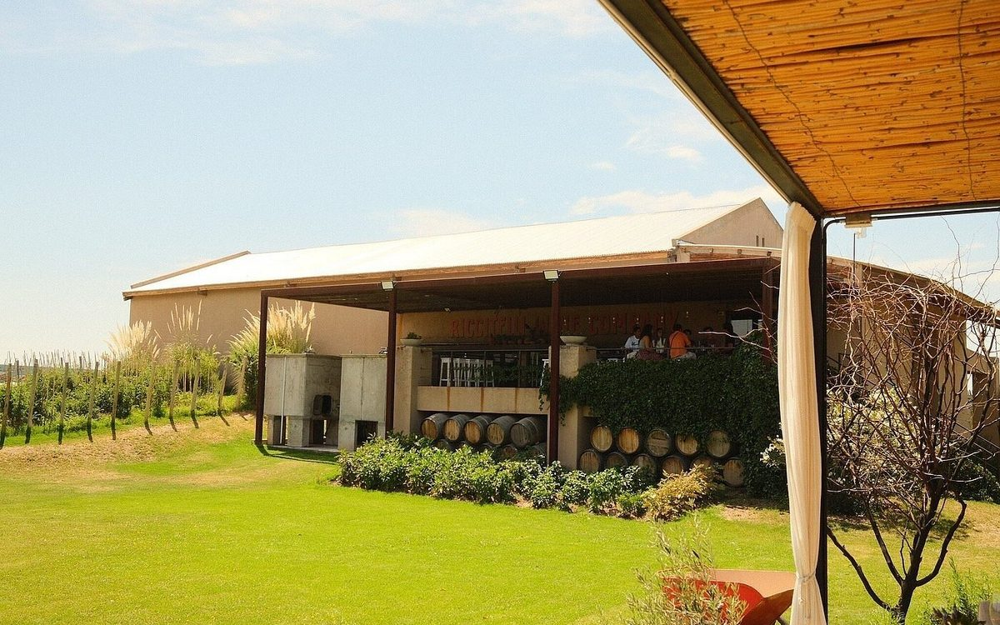
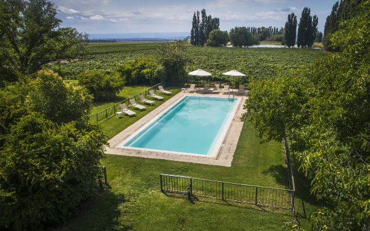

Catena Zapata
AgreloThe pyramid rising from the vineyards and one of the most admired wine brands in the world. The most requested visit in Mendoza.
Max Wine House · visitor's guide
Wineries and where to stay
It hardly ever rains in Mendoza. Every vineyard, and every tree lining its streets, lives on snowmelt from the Andes, carried down by irrigation channels dug centuries ago. Most of Argentina's wine comes from this oasis: seven out of every ten hectares of the country's vineyards are here, and nearly all of its Malbec.
And you drink it facing the Andes: vineyards more than a thousand meters above sea level, in sight of Aconcagua, the highest mountain in the Americas.
A Max Wine House selection: places with a story to tell.
The classics the whole world wants to visit. Book these first.
The pyramid rising from the vineyards and one of the most admired wine brands in the world. The most requested visit in Mendoza.

The highest-placed Argentine winery in the 2025 world wine tourism ranking. Century-old vines, estate cooking and guest houses to stay in.

A winery inspired by the Divine Comedy, with Alejandro Vigil's wines and one of the most sought-after dining experiences in the province.

Stone architecture at the foot of the Andes. After topping the world ranking three years in a row, it entered its Hall of Fame.
Visit them in Mendoza and, when you get back, their wines will be waiting for you at Max Wine House.

Matías Riccitelli's signature winery, listed in the 2025 world wine tourism ranking. Old vines, with a bistro set among them.

Paul Hobbs's winery in Mendoza, which joined the world wine tourism ranking in 2025.

One of the most awarded wineries in the country. Its seated tasting facing the Andes, with Malbecs from century-old vineyards, is what visitors praise most.

An ultramodern winery that looks like a spaceship among vineyards at 1,200 meters, with its own restaurant.

The highest winery in Mendoza, run by the Michelini brothers. Small-group visits, by reservation.
Wake up among the vines, with the Andes in front of you and the winery a few steps away.

The hotel of Susana Balbo, Argentina's first female winemaker. Suites with a private spa, a member of Relais & Châteaux.

Just a few rooms within the winery estate, with a restaurant, golf and trout fishing.

Sleep inside one of the country's most visited wineries, with its amphitheater-shaped cellar and an art center steps away.
Choose how much time you have and book a ready-made itinerary.
Tours ready to book, with private transfer included.
Catena Zapata with a blend-your-own-wine game, plus lunch at Quimera, the Achaval Ferrer bistro recommended by the Michelin Guide.
Book this tourThe most popular pairing: a visit to Catena and lunch at Michelin-starred Casa Vigil.
Book this tourStay in Mendoza or in Chacras de Coria; each day you are picked up from and brought back to your hotel. No driving.
Morning visit to Catena Zapata and lunch at Casa Vigil, with private transfer.
Book day 1Visit and five-wine tasting at Zuccardi Piedra Infinita, facing the Andes, with private round-trip transfer.
Book day 2The most popular and best-rated hotel downtown, with mountain views and a much-praised breakfast.
Ask about a stayThe luxury classic facing the main square, with its own spa and restaurants.
Ask about a stayPeace and quiet among the vineyards and the best rating in the area, closer to the Luján wineries.
Ask about a stayFell in love with a wine on your trip? We source it straight from the winery and deliver it to your door in Buenos Aires.
Browse MWH wines Double-hinged corkscrewThe sommelier's choice: it won't break old corks
Double-hinged corkscrewThe sommelier's choice: it won't break old corks
 Crystal glassesThe right glass for each wine brings out its aromas and flavor
Crystal glassesThe right glass for each wine brings out its aromas and flavor
 DecanterFor age-worthy wines that need to breathe
DecanterFor age-worthy wines that need to breathe
 Vacuum wine stopperSo an open bottle lasts several days
Vacuum wine stopperSo an open bottle lasts several days
Ask us and we'll get it for you.
Keep these handy during your trip. On your phone, tap a number to call.
Check opening hours before you go. If you need to exchange money, ask at your hotel about the safest and most convenient options, and avoid the airport, where fees tend to be considerably higher. Compare exchange rates before you trade.